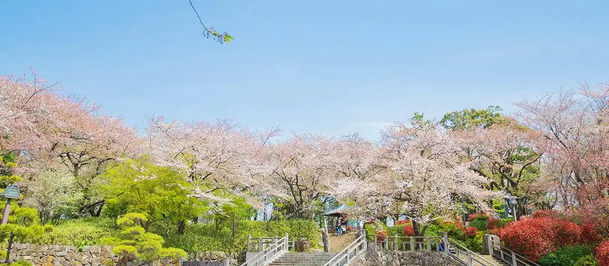
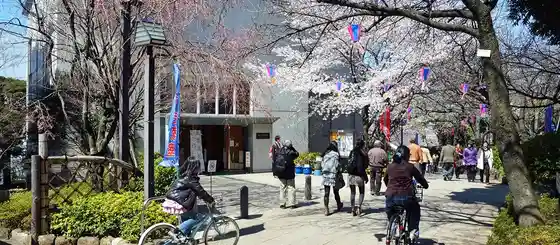
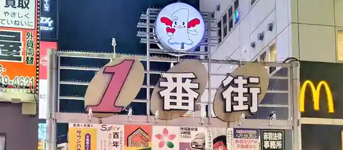

Kitaku, Tokyo: things to do, food and stays
Kitaku · Tokyo
Kitaku
Highlighted on the Tokyo map.

Sights
Asuka Yama Park
Kami no Museum

Kyu-Furukawa Gardens
Akabane Ichibangai Shopping Street

Former Iwabuchi Floodgate
Shibusawa-kun's Design Manhole Cover
Shibusawa Shiryo Kan
Banknote and Postage Stamp Museum
Oji Inari Shrine
Shibusawa × Kitaku Asuka Yama Omiyage Kan
Signboard of Leiji Matsumoto Works such as Galaxy Express 999 and Uppy
Jujo Ginza Shopping Street
(no Rakuro) no Dezainmanhoru Futa
Seino Toru's Design Manhole Cover
Dining
Ikewanagi no Mise Tsugumi An
活鰻の店 つぐみ庵

Seafood restaurant in Kitaku, Tokyo.
Sansanto
燦燦斗

Noodle restaurant in Kitaku, Tokyo.
King Seimen
キング製麺

Noodle restaurant in Kitaku, Tokyo.
Kuromatsu Honpo Sogetsu
黒松本舗 草月

Sweets and bakery shop in Kitaku, Tokyo.
Chuka Sobaya Ito
中華そば屋 伊藤

Noodle restaurant in Kitaku, Tokyo.
Niboshi Soba Ru.
煮干そば 流。

Noodle restaurant in Kitaku, Tokyo.
Jikaseimen Ito
自家製麺 伊藤

Noodle restaurant in Kitaku, Tokyo.
Mendokoro Natsumi
麺処 夏海

Noodle restaurant in Kitaku, Tokyo.
Ittou An
一東菴

Noodle restaurant in Kitaku, Tokyo.
Teuchi Udon Sumita
手打うどん すみた

Noodle restaurant in Kitaku, Tokyo.
Sanuki Udon Iwai
讃岐うどん いわい

Noodle restaurant in Kitaku, Tokyo.
Gateki Chuka Soba Kijo no Kuron.
我的中華そば 机上の空論。

Noodle restaurant in Kitaku, Tokyo.
La Maison du Ramen Bisque
La Maison du Ramen ビスク

Noodle restaurant in Kitaku, Tokyo.
Saitama Ya
埼玉屋

Izakaya or bar in Kitaku, Tokyo.
Men Takahashi
麺 高はし

Noodle restaurant in Kitaku, Tokyo.
Ramen Fujimaru Kamiya honten
ラーメン富士丸 神谷本店

Noodle restaurant in Kitaku, Tokyo.
Nakazato
中里

Sweets and bakery shop in Kitaku, Tokyo.
Menya Nanigashi
麺屋なにがし

Noodle restaurant in Kitaku, Tokyo.
Tonki
とんき

Meat restaurant in Kitaku, Tokyo.
Ramen Fujimaru Meijidoori toden kajiwara ten
ラーメン富士丸 明治通り都電梶原店

Noodle restaurant in Kitaku, Tokyo.
[Relocated]Tsukemen Jindagi
つけ麺 神儺祁
![[Relocated]Tsukemen Jindagi](/media/tokyo-kitaku-tb13278493.webp)
Noodle restaurant in Kitaku, Tokyo.
Old Ramen Shop Gyakuryu
オールドラーメンショップ 逆流

Noodle restaurant in Kitaku, Tokyo.
odorat Reservation
odorat

European restaurant in Kitaku, Tokyo.
Ame Ni Mo Makezu
雨ニモマケズ

Noodle restaurant in Kitaku, Tokyo.
Fish on Dish Rolly
フィッシュ オン ディッシュ ロリー

Seafood restaurant in Kitaku, Tokyo.
Yoneyama
米山

Izakaya or bar in Kitaku, Tokyo.
Mizoguchiya Higashijuujou ten
ミゾグチヤ 東十条店

Noodle restaurant in Kitaku, Tokyo.
GANCON NOODLE
ガンコンヌードル

Noodle restaurant in Kitaku, Tokyo.
Raamen Youzan
らぁ麺 ようざん

Noodle restaurant in Kitaku, Tokyo.
Sushi Dokoro Miyako Wakemise
すし処 みや古分店

Seafood restaurant in Kitaku, Tokyo.
CRAFT MEAT&LAB.

Meat restaurant in Kitaku, Tokyo.
Kawaei
川栄

Seafood restaurant in Kitaku, Tokyo.
Jikaseimen Houkiboshi
自家製麺ほうきぼし

Noodle restaurant in Kitaku, Tokyo.
Tobu Ha
飛葉

Meat restaurant in Kitaku, Tokyo.
Akabane Kyosuke
赤羽京介

Noodle restaurant in Kitaku, Tokyo.
Akabane Anko
赤羽あんこ

Sweets and bakery shop in Kitaku, Tokyo.
Stay
JR-East Hotel Mets Akabane
JR東日本ホテルメッツ 赤羽

JR-East Hotel Mets Akabane is a hotel in Kitaku, Tokyo.
KOKO HOTEL Akabane Station
KOKO HOTEL 赤羽駅前

KOKO HOTEL Akabane Station is a hotel in Kitaku, Tokyo.
Daiwaroinetto Hotel Tokyo Akabane
ダイワロイネットホテル東京赤羽

ダイワロイネットホテル東京赤羽 is a hotel in Kitaku, Tokyo.
APA Hotel Akabane Iwabuchi Ekimae
アパホテル〈赤羽岩淵駅前〉

APA Hotel Akabane Iwabuchi Ekimae is a hotel in Kitaku, Tokyo.